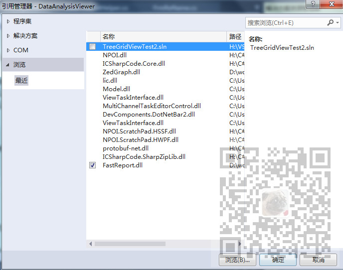

原文出处:本文由博客园博主霸道流氓提供。
原文连接:https://www.cnblogs.com/badaoliumangqizhi/p/11903746.html
原文连接:https://www.cnblogs.com/badaoliumangqizhi/p/11903746.html
场景
使用Visual Studio 开发Winform程序，使用SVN进行项目版本管理。
在添加引用时，会出现在A电脑中添加了绝对路径的引用，在B电脑中就会出现找不到
并且将此引用标识为？的状态。
注:
博客主页：
https://blog.csdn.net/badao_liumang_qizhi
关注公众号
霸道的程序猿
获取编程相关电子书、教程推送与免费下载。
实现
比如在电脑A中添加了一个引用是从A中某磁盘绝对路径中引用

那么这样在电脑B中进行更新后，在B的电脑中没有这个据对路径的引用，就会出现
在VS中有文件但是显示一个？的状态，在真实目录下是没有这个引用的。
解决
将项目代码放在统一的svn管理的配置库中，由电脑A和B将代码拉取下来。
在电脑A中添加引用时，首先将引用复制到配置库中存放代码的项目目录下，再在项目目录下
添加应用时添加同项目项目下的应用，然后将真实目录的引用文件和引用同时提交，这样就能将
引用的绝对路径改为相对路径。